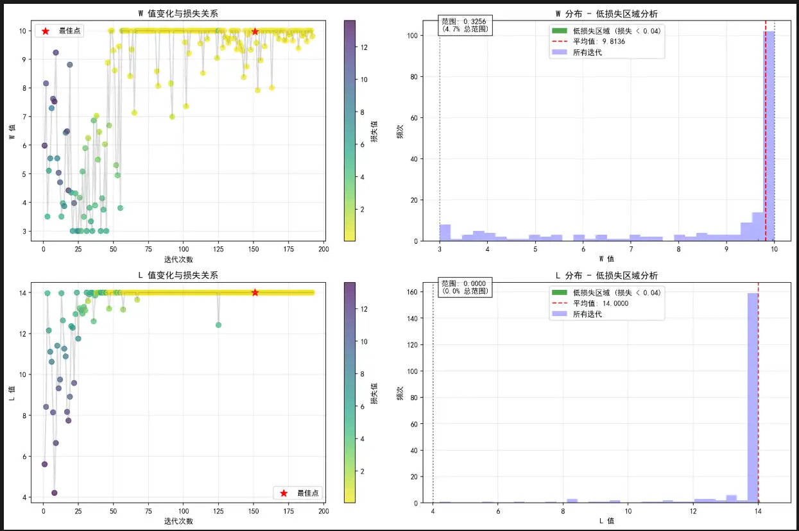
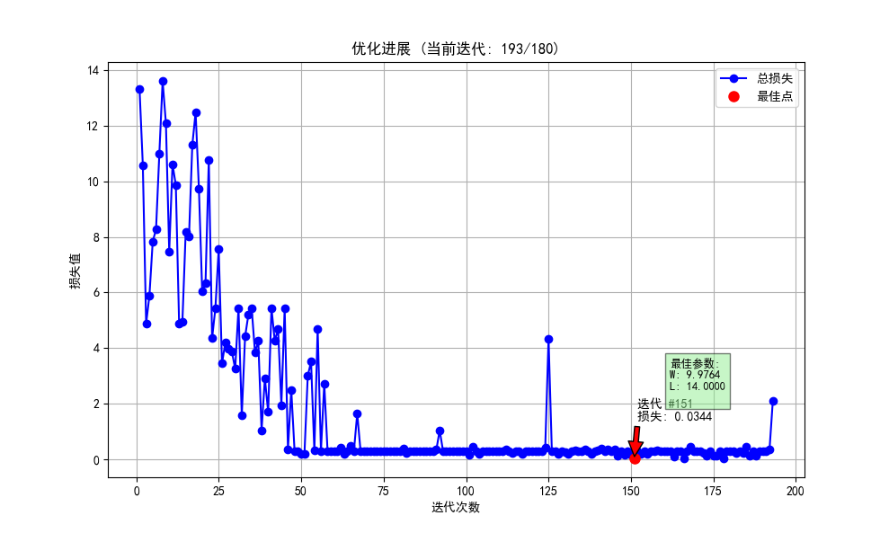
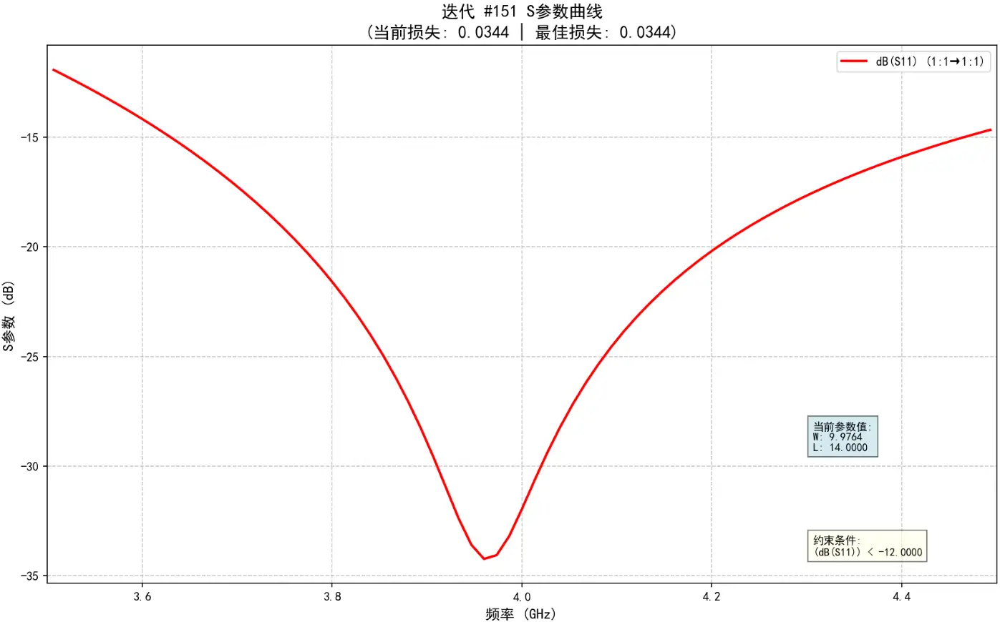

算法辅助全波电磁仿真优化
用 Python 脚本驱动 HFSS 做全波电磁仿真寻优：PSO、Bayesian 等算法可选可换， 约束目标直接入环；再以 BNN 代理模型 + 主动学习把昂贵仿真换成廉价预测， 已应用于实际课题与工程项目。
项目概述/ Overview
优化策略的第一道筛选不是收敛速度，而是单次评估的成本。
设计 Python 脚本辅助 HFSS 进行全波电磁仿真优化，集成 PSO、Bayesian 等可选算法，支持约束目标定义与参数优化， 已应用于实际课题与工程项目。
问题出在成本上：全波求解器每评估一组候选参数，就要做一次完整的有限元求解， 单次常以分钟乃至小时计；而 PSO 这类群体方法一代要维持上百个个体、连续迭代数十代， 直接寻优意味着成百上千次全波仿真的预算，参数一多、变量间再互相牵制，就完全划不来。
因此在优化器与求解器之间插入一层代理模型：用少量真实仿真做训练样本， 学出一个评估几乎免费的预测函数，让优化器先在廉价代理上粗筛， 只把最有信息量的少数点送回 HFSS 校验。本项目采用 BNN（贝叶斯神经网络）作代理模型——它给出预测的同时还给出不确定性， 主动学习策略正是按这个不确定性决定下一次仿真花在哪里。
在此基础上进一步探索物理先验嵌入的强化学习参数优化架构： 把已知的电磁规律作为先验约束进探索过程，避免智能体把预算浪费在物理上不可能达标的参数区域。
技术栈与能力/ Stack
工具链视角：谁在驱动、谁在求解、谁在选择、谁在预测。
- 驱动脚本
- PythonMATLAB 辅助
- 电磁求解器
- HFSS全波 · FEM
- 优化算法
- PSO · BayesianGA / DE 等可选
- 目标定义
- 约束目标 + 参数优化
- 代理模型
- BNN贝叶斯神经网络
- 采样策略
- 主动学习不确定性驱动
- 探索方向
- 物理先验 + 强化学习
- 应用状态
- 课题与工程项目在用
技术方案/ Approach
每条都围绕同一个问题：怎么少跑仿真、跑对仿真。
- 把求解器变成可调用的目标函数 —— 脚本串起「写入参数 → 驱动 HFSS 求解 → 提取结果指标」， 人工扫描慢且易错、无法批量重复；只有当循环可以全自动闭合，任何优化算法才有运行的前提。
- 约束目标显式定义 —— 天线指标不是单一标量：带宽、增益、尺寸包络彼此制约。 把约束作为优化器的直接输入，不可行解在环内就被拒绝，而不是事后靠人工筛结果。
- 算法层与求解层解耦 —— 不同课题的参数维度与地形起伏不同，群体法与贝叶斯法各有适用面。 求解器按黑箱目标函数暴露，PSO、Bayesian（及 GA、DE 等）作为可切换选项， 既能按问题选型，也能在同一任务上对比不同算法的行为。
- BNN 代理 + 主动学习采样 —— 选贝叶斯神经网络而非普通网络，是因为它同时输出预测值与不确定性； 样本预算有限时，按不确定性选点，让每一次昂贵仿真买到最大的信息增益。
- 自适应参数调节与收敛判断 —— 依据每轮代理的后验反馈调整参数搜索区间， 配合收敛判断在增益趋零时及时停止，避免预算耗在已经收敛的区域。
- 结果可视化分析 —— 迭代曲线与参数轨迹同屏呈现（见 FIG 02 / FIG 03）， 既校验代理预测与全波结果的一致性，也判断收敛是否健康，而不是只盯最后一个点。
项目图档/ Figures
点击放大，滚轮缩放、拖拽平移，方向键翻页。



FIG 01
项目成果/ Outcomes
这一页的交付物是工具链本身，它仍在生长。
参数写入、HFSS 求解、结果提取与目标评估串成一条自动循环，寻优不再依赖人工转抄。
GA、DE 等可扩展；约束目标直接入环，不可行解在循环内即被排除。
以预测不确定性为采样指南，把有限的仿真预算排在信息增益最高的位置。
已应用于实际课题与工程项目；物理先验嵌入的强化学习架构仍在探索。
相对人工参数扫描，仿真次数显著减少；代理模型精度较直接拟合提升约 15 %。
注：60 % 与 15 % 沿用本站旧版本页数据，基线口径（对比对象、样本课题）待补充。
关联：研究方向 · 能力矩阵 · 编程与数据分析